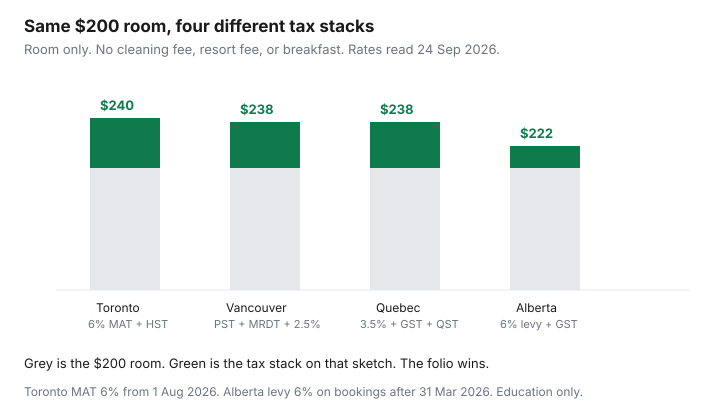

Travel · Canada
Canadian Hotel and Airbnb Taxes Explained: GST/HST, MAT, MRDT, and Tourism Levies
The room looked $40 cheaper in the next city. At checkout it was not the same tax. GST or HST, a municipal accommodation tax, British Columbia’s sales tax and hotel tax, Québec’s lodging tax, and Alberta’s tourism levy are different lines. Households compare the pre-tax card and then wonder why the bill jumped.
This is the guest’s map, not a host’s remittance guide. Rates were read on 24 Sep 2026 from the City of Toronto, the City of Ottawa, the Province of British Columbia, Revenu Québec, Alberta.ca, and the Canada Revenue Agency. Cities change bylaws. The checkout for your dates is the price. Whether a kitchen is worth the cleaning fee, after these taxes, is the Airbnb versus hotel guide.
Disclosure: Hotel and short-term rental booking sites are an offer type. Saving Optimizer may earn a commission if we later add those links. We do not currently claim a partnership with any platform, city, or hotel brand. Education only. This is not tax advice.
Key takeaways
- A short stay is generally under one month of continuous occupancy. GST/HST applies if the supplier is registered, unless the room is $20 or less per day. One month or more, for the same person, can be exempt. CRA’s test is a month, not a universal “30 nights.”
- Ontario HST is 13%. Toronto’s municipal accommodation tax is 6% for stays beginning 1 August 2026. The City’s own example puts HST on the room and on the MAT. Ottawa’s MAT is 6% from 1 January 2026. Other Ontario cities set their own rates.
- British Columbia charges 8% PST on short-term accommodation plus MRDT of up to 3%. Vancouver adds a 2.5% Major Events MRDT through 31 January 2030, and GST applies on that provincial stack.
- Québec’s tax on lodging is usually 3.5% in regions that adopted it, on top of GST and QST, for stays of fewer than 32 consecutive days. Alberta’s tourism levy is 6% on bookings after 31 March 2026 (4% if booked before 1 April 2026).
- Compare the checkout total, line by line. A platform that collects the levy has already put it in the price. A listing that hides the breakdown is harder to compare, not automatically cheaper.
- The clocks do not match. Alberta’s levy can drop at 28 continuous days while GST still applies until a full month. Vancouver’s PST and MRDT can drop when the bill is 27 days or more. Do not book extra nights only to chase an exemption you will not occupy.
Federal GST/HST on short stays under 30 days—what shows on the folio
The Canada Revenue Agency treats short-term accommodation as a stay of less than one month of continuous occupancy by the same individual. Under one month, the supply is taxable when a registrant provides it, unless the consideration is $20 or less per day. A month or more, as a place of residence or lodging, can be exempt even if the bill is weekly, as long as the arrangement is continuous occupancy of the same unit. A hotel that rents by the night to a series of guests is not that arrangement. A 29-night booking you will actually occupy is still short-term if it is under a month.
The rate on the folio follows the province of the bed, not the province on your driver’s licence.
| Where you sleep | GST/HST on a short stay | What else is usually on the bill |
|---|---|---|
| Ontario | HST 13% | Municipal accommodation tax where the city charges one. Toronto puts HST on the MAT as well. |
| New Brunswick, Newfoundland and Labrador, Nova Scotia, Prince Edward Island | HST 15% | A local marketing levy in some cities. Read the folio. Do not assume Ontario’s MAT exists there. |
| Alberta, Saskatchewan, Manitoba, British Columbia, the territories | GST 5% | Alberta tourism levy, B.C. PST and MRDT, and provincial sales tax on lodging where that province charges it. |
| Québec | GST 5%, plus QST 9.975% | Tax on lodging, usually 3.5%, in tourism regions that adopted it. GST and QST are calculated on a total that includes that lodging tax when the supplier is registered. |
On the folio, the room rate is one line. GST or HST is the next line guests skip. A “taxes and fees” lump on a search card is not a folio. Open the breakdown before you compare two cities. Food, parking, and a resort fee can be taxed and still sit outside the municipal room tax. If they are bundled into “nightly rate,” you cannot see which tax applied. Ask for the breakdown, or treat the all-in number as the only number you trust.
Municipal Accommodation Tax (MAT) in Ontario cities and how rates differ
Ontario lets municipalities charge a municipal accommodation tax on transient stays. The province does not set one rate for every city. Toronto is not Ottawa, and a town with no bylaw is not quietly charging Toronto’s percent.
Toronto. For stays beginning 1 August 2026, the MAT is 6%. A temporary 8.5% rate ended. The City says hotels and short-term rentals charge 6% on the room portion. Other items — meeting rooms, food, internet, phone — are outside the MAT if they are itemized. The City’s hotel example: $100 of room revenue subject to MAT, $6 of MAT, and $13.78 of HST, because HST applies to the room and to the MAT. Scale that to a $200 room and the sketch is $12 of MAT and $27.56 of HST, about $239.56 before any fee that is not the room. Continuous hotel stays of 30 days or less are in the tax. Confirm a longer stay against the current bylaw rather than assuming day 31 is free of every charge.
Ottawa. The MAT is 6% from 1 January 2026, up from 5%. It applies to the room portion of overnight accommodation under 30 consecutive nights, including many short-term rentals. Platforms are part of the collection path for those listings. Food, parking, and similar extras are outside the MAT when they are separate. A bed and breakfast exemption exists for some traditional operators. Do not apply it to a downtown hotel.
Mississauga, London, Niagara, and other cities have adopted their own percents and start dates. Use the city’s page for the percentage and for whether a stay past a set number of nights drops off. Copying Toronto’s 6% into a weekend in a different region is how a comparison lies. The all-in lodging sketch that uses Toronto’s 6% on a four-night stay is already worked in the Airbnb versus hotel guide. This page is why that percent is not national.
BC PST + MRDT and Québec lodging tax for overnight guests
British Columbia. Short-term accommodation is charged 8% PST, not the 7% provincial rate on ordinary goods. Participating areas add the municipal and regional district tax, up to 3%, on the same base. Vancouver also charges a 2.5% Major Events MRDT from 1 February 2023 through 31 January 2030, on top of the 3%. The province says that in Vancouver, during that period, the combined provincial tax exceeds 12%, so GST applies to the PST, the MRDT, and the major-events tax. Elsewhere in B.C., GST is not charged on the PST or the MRDT.
A labelled $200 Vancouver room: PST $16, MRDT $6, major-events tax $5, then GST at 5% of $227, which is $11.35. All-in about $238.35 before a resort fee. A labelled $200 room in a B.C. town with a 3% MRDT and no major-events tax: PST $16, MRDT $6, GST $10 on the room only, about $232. A town that has not adopted the MRDT is PST and GST only. The checkout should name the lines. If it says only “tax,” you cannot tell whether the 2.5% is in it.
Québec. Revenu Québec says that, in addition to GST and QST, a guest pays the tax on lodging for a stay of fewer than 32 consecutive days in an establishment that is subject to the tax and located in a tourism region that asked for it. The tax is usually 3.5% of the price of the overnight stay. It is not the QST. It does not apply to a campsite, a youth hostel unit in the youth-establishment category, a rental of six hours or less, or a stay of more than 31 consecutive days. Some intermediary rentals are billed at a flat $3.50 per night instead of 3.5%. A registered digital platform often bills the 3.5% rate. Read which one you are paying.
When the supplier is registered for GST and QST, those taxes are calculated on the total that includes the lodging tax. A labelled $200 room plus $7 of lodging tax is $207. GST is about $10.35 and QST is about $20.65. All-in about $238 before breakfast or parking, which Revenu Québec says are excluded from the 3.5% base and then included in the GST/QST total if they are sold with the stay. Montréal is not a special federal rate. It is this stack, if the region is covered, which the Montréal region is.
Alberta tourism levy and when platforms collect it for you
Alberta has no provincial sales tax on the room. It has a tourism levy, and GST at 5%. Budget 2026 moved the levy from 4% to 6% at 12:01 a.m. on 1 April 2026. Bookings made before 1 April 2026 stay at 4%. A contract that locked a price on or before 23 March 2026 can also stay at 4% for accommodation supplied after the increase. Anything booked after 31 March 2026 is 6% of the purchase price. Older blog posts that still say 4% are describing a booking date, not the rate on a new search.
The levy is not charged on lodging continuously occupied by the same person for 28 days or more. Operators, hosts, and online brokers file the levy. If you book through a platform that already shows the levy at checkout, you are not meant to pay it again at the door. If the checkout is silent, ask whether the 6% is included before you compare that listing with a hotel folio that shows the levy as its own line. A $200 room booked after 31 March 2026 is $12 of levy. GST on the accommodation is a separate $10 if it is calculated on the room alone. If the folio charges GST on the levy as well, the receipt is right and the sketch is short by 60 cents. Use the receipt.
A platform total that is $20 under a hotel total, before you have seen the levy, is not yet a saving. Add the levy, GST, a cleaning fee, and a guest fee. Then decide. The kitchen rule still lives on the other guide. This one only stops the tax surprise.
How to read a checkout screen so you compare hotels and STRs fairly
Use the same nights, the same party, and the same cancellation date. Then unbundle every line the screen will show.
- Nightly rate times nights. If the rate already says “including taxes,” do not add the city’s percent again.
- Cleaning, resort, destination, or “host” fees. They are part of the lodging cost. A hotel that folds them into the rate is not automatically more expensive.
- Platform service fees. They are real money. They are not a tax.
- GST, HST, or QST, named as such.
- The local line: MAT, MRDT, major-events tax, Québec tax on lodging, or Alberta tourism levy. If the name is missing, the comparison is not finished.
- Tax on tax, where it exists. Toronto’s HST on the MAT, Vancouver’s GST on the provincial hotel taxes, and Québec’s GST/QST on a total that includes the lodging tax are the three that move the total the most.

A short-term rental that wins by $15 before a $120 cleaning fee does not win. A hotel that wins on tax and loses once you add four breakfasts does not win either. Finish the tax lines, then go back to the product decision. Book the channel whose cancellation you can live with. Direct versus a portal, and whether the stay earns hotel points, is the direct booking guide.
Longer stays near 28–30 days: when lodging taxes drop off
Stretching a trip to dodge tax only works if you will occupy the room for the whole exempt period, and only for the tax whose clock you actually met. The clocks are not the same number.
| Tax | When it can drop off | What still applies |
|---|---|---|
| GST/HST | One month or more of continuous occupancy by the same individual, under CRA’s residential rental rules. | A 30-night stay that is still under a calendar month can remain taxable. $20 or less per day is the other exemption, and it is not a normal hotel. |
| Alberta tourism levy | 28 continuous days or more, same person. | GST, until the stay is also a month. |
| B.C. PST and MRDT | If the supplier bills a period of 27 days or more, PST and MRDT are not charged. Shorter bills are taxable; after day 26 the guest may apply to the province for a refund of PST and MRDT already paid. The supplier does not hand that refund back. | GST, until the federal month test is met. Vancouver’s major-events tax follows the MRDT rules. |
| Québec tax on lodging | More than 31 consecutive days (a stay of at least 32). | GST and QST may also drop when the stay is more than 31 consecutive days. Confirm on the folio. Do not assume a 31-night booking already qualifies. |
| Toronto and Ottawa MAT | Toronto’s hotel pages describe the MAT on continuous stays of 30 days or less. Ottawa’s tax is aimed at stays under 30 nights. | HST, until the federal test is met. Read the bylaw for the city you are in before you plan day 31. |
A 28-night Alberta booking can drop the 6% levy and still show 5% GST. A Vancouver bill written as 27 days can drop PST and MRDT and still show GST, including GST on taxes already charged for the earlier days if those days were billed weekly. Weekly billing is how people pay the tax and then have to ask for it back. If you are staying the month, ask for a bill that matches the stay. If you are staying 10 nights, pay the tax and compare all-in prices. The exemption is not a coupon.
Sources & date stamps
- Canada Revenue Agency, GST/HST Memorandum 19.2.2 — short-term accommodation under one month is taxable when supplied by a registrant, unless $20 or less per day; one month or more of continuous occupancy can be exempt. Read 24 Sep 2026.
- City of Toronto MAT pages — 6% for stays beginning 1 Aug 2026; HST on the MAT; the $100 / $6 / $13.78 example. Read 24 Sep 2026.
- City of Ottawa — MAT 6% from 1 Jan 2026 on accommodation under 30 consecutive nights. Read 24 Sep 2026.
- Government of British Columbia, PST on accommodation — 8% PST, MRDT up to 3%, Vancouver Major Events MRDT 2.5% through 31 Jan 2030, GST on that Vancouver stack, and the 27-day billing rule. Read 24 Sep 2026.
- Revenu Québec, tax on lodging — usually 3.5% for stays of fewer than 32 consecutive days; GST/QST on a total that includes the lodging tax when the supplier is registered. Read 24 Sep 2026.
- Alberta.ca, tourism levy — 4% for bookings before 1 Apr 2026; 6% after; 28 continuous days exempt; 23 Mar 2026 contract note. Read 24 Sep 2026.
Frequently asked questions
Why did a Canadian hotel bill jump 13 to 18 percent?
GST or HST sits on a short stay, and a local tax often sits beside it. Toronto adds a 6% municipal accommodation tax and then HST on both the room and the MAT. Vancouver stacks 8% PST, up to 3% MRDT, and a 2.5% major-events tax, then GST on that stack. Compare the checkout total, not the pre-tax card.
What is the municipal accommodation tax in Toronto and Ottawa?
Toronto’s MAT is 6% for stays beginning 1 August 2026. Ottawa’s MAT is 6% from 1 January 2026, on accommodation under 30 consecutive nights. Other Ontario cities set their own rates. Do not copy Toronto’s percent into a different city.
Does Alberta still charge a 4% tourism levy?
Bookings made before 1 April 2026 stay at 4%. Bookings after 31 March 2026 are 6%. A contract that locked the price on or before 23 March 2026 can stay at 4%. The levy drops when the same person occupies the lodging for 28 continuous days or more. GST is separate.
How much is Québec’s tax on lodging?
Usually 3.5% of the overnight price, in tourism regions that adopted it, for a stay of fewer than 32 consecutive days. GST and QST are on top. When the supplier is registered, GST and QST are calculated on a total that includes the lodging tax. A campsite is not charged the lodging tax.
If I stay 28 or 30 nights, do all the taxes disappear?
No. Alberta’s levy can drop at 28 continuous days while GST remains until a full month. B.C. PST and MRDT can drop when the bill is for 27 days or more. Québec’s lodging tax drops after more than 31 consecutive days. CRA’s GST exemption is one month of continuous occupancy, not a universal 30-night coupon.